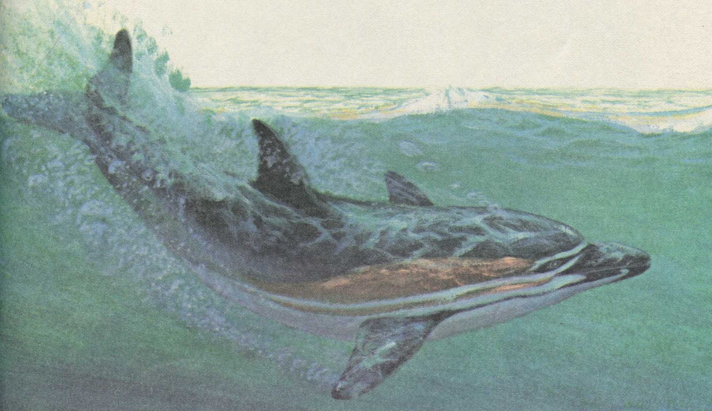
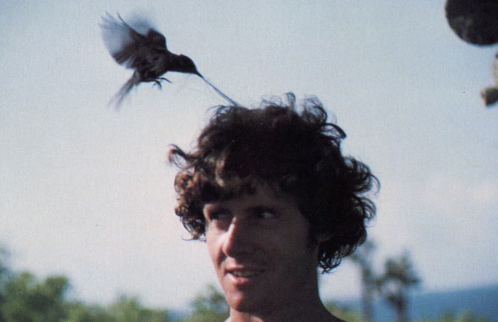

Awards & Honors
STONE SOUP was selected for the Primary Education Project in Nigeria.
The Laura Parsons Pratt Award from the Federation of Protestant Welfare Agencies. This award was given to me for my life’s work of writing books and supporting libraries. I was delighted to receive this prestigious honor from an organization that helps children in many ways.
Earthworm Award for the book that “does the most to encourage environmental awareness and sensitivity in children.” Awarded for LITTLE WHALE.

LITTLE WHALE
First woman awarded Author of the Year from Scholastic’s Lucky Book Club.
President Clinton awarded me the Arkansas Traveler Award when he was Governor.
Me (on the right) with Bill Clinton when he was Governor of Arkansas.
The National Science Teachers Association and The Children’s Book Council named these four books “Outstanding Science Books for Children”: NIGHT DIVE, SHARKS, SHARK LADY: TRUE ADVENTURES OF EUGENIE CLARK, and SWIMMING WITH SEA LIONS AND OTHER ADVENTURES IN THE GALAPAGOS ISLANDS.

Be careful. Birds are so tame in the Galapagos that they might take your hair to make a nest.
More than 20 of my books have been nominated for state awards, voted by the children of those states.
SCRAM, KID won the Horn Book Award and was included on “The Best Books for Children” list.
THE SECRET SOLDIER, IF YOU LIVED IN COLONIAL TIMES and IF YOU LIVED WITH THE SIOUX INDIANS were named Notable Books by the American Library Association.
STONE SOUP and THE PILGRIMS’ FIRST THANKSGIVING were named Children’s Choice Books by the International Reading Association.